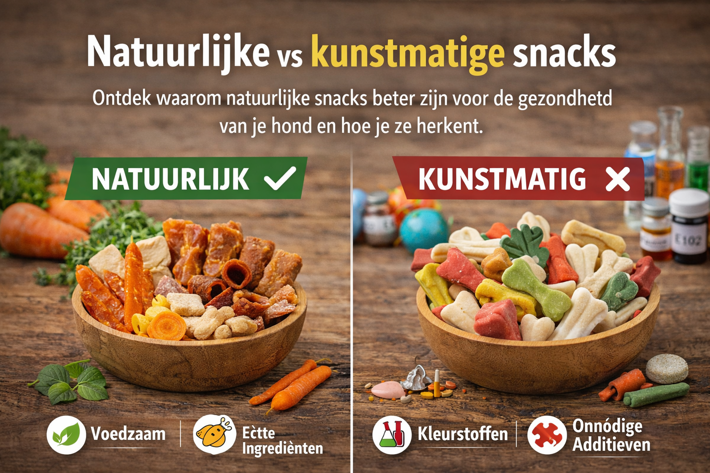

Natuurlijke vs Kunstmatige Snacks
Ontdek waarom natuurlijke snacks beter zijn voor de gezondheid van je hond en hoe je ze herkent.
Wanneer je door de voedingsafdeling van een winkel loopt, zie je ze overal: zakken vol hondensnacks in felle kleuren, glanzend verpakt en voorzien van aantrekkelijke marketing. Ze zijn goedkoop, honden vinden ze heerlijk, en ze beloven tanden schoon te maken, energie te geven of het immuunsysteem te boosten.
Maar open die verpakking, lees de ingrediëntenlijst, en je ziet woorden die je niet eens kunt uitspreken: ethoxyquin, BHA, carrageenan, tetrasodium pyrophosphate.
Dit is het spanningsveld tussen kunstmatige hondensnacks en natuurlijke alternatieven. En hoewel de keuze niet zwart-wit is, zijn de verschillen in gezondheidsimpact aanzienlijk—veel aanzienlijker dan veel eigenaren zich realiseren.
Wat Zijn Kunstmatige Hondensnacks Eigenlijk?
Kunstmatige hondensnacks zijn producten gemaakt van goedkope bulk-ingrediënten, verrijkt met chemische toevoegingen om ze langer houdbaar, smakelijker en visueel aantrekkelijker te maken. Ze zijn ontworpen voor massaproductie en winstmaximalisatie, niet voor de gezondheid van je hond.
De ingrediëntenlijst van zulke snacks leest als een chemieles. Laten we de meest voorkomende boosdoeners eens onder de loep nemen.
De Rode Vlag: Kunstmatige Conserveermiddelen
Dit zijn misschien wel de gevaarlijkste toevoegingen in goedkope hondenvoeding.
BHA en BHT (Butylated-hydroxyanisole & Butylated-hydroxytoluene)
Deze beide chemische conserveermiddelen worden gebruikt om vetten in hondensnacks van gaan ranzig. Het probleem? Ze worden direct gelinkt aan kankervorming. In feite hebben zowel het Amerikaanse Nationaal Toxicologie Programma als de FDA onderzoeking bekendgemaakt dat deze stoffen tumoren veroorzaakten in proefdieren.
BHA kan het cholesterol in het bloed verhogen en bij overgevoelige honden zelfs oedeemvorming (vochtverzameling) veroorzaken. En het ergste? Deze stoffen zijn in sommige landen voor humane consumptie volledig verboden, maar ze worden nog steeds in hondensnoepjes gestopt omdat er minder regulering is op diervoeding.
Ethoxyquin – Het Pesticide Dat Zich Verbergt
Dit is één grote vuile truuk van de industrie. Ethoxyquin was oorspronkelijk een pesticideingredient en is gelinkt aan kankervorming. Het wordt vooral gebruikt om vismeel te behouden tegen oxidatie.
Maar hier is het vogelgeheimpje: als het conserveermiddel al in het vismeel zit voordat het de fabriek binnengaat, hoeft de fabrikant het niet op het etiket te vermelden. Dit betekent dat je hond ethoxyquin kan consumeren zonder dat jij het weet. De enige manier om dit te voorkomen is door de fabrikant expliciet te bellen of schriftelijk bewijsstuk te vragen dat hun product geen ethoxyquin bevat.
Propylene Glycol – "Veilig Tot Zekere Hoogte"
Dit is een soort vochtbinder die veel in semi-vochtige hondensnacks wordt gebruikt. De FDA zegt dat het "Generally Recognized As Safe" is, maar het is in werkelijkheid verboden voor kattensnoepjes omdat het giftig kan zijn in hogere concentraties. Voor honden geldt: als je hond erover gebuigd zit (wat ze graag doen), accumuleert het lichaam constant deze stof. Op lange termijn kan dit tot schadelijke effecten leiden.
De Vulmiddelen: Goedkope Bulk, Nul Voedingswaarde
Fabrikanten gebruiken vulmiddelen om "volume" aan snacks toe te voegen zonder dure ingrediënten zoals vers vlees te gebruiken. Het resultaat is dat je hond veel eet zonder veel voeding te krijgen.
De Ergste Vulmiddelen:
- Soybean hulls en meal: Goedkoop, maar estrogenic (hormoonverstorend) en een veelvoorkomende allergen
- Corn bran, corn gluten en modified corn starch: Geen voedingswaarde, veroorzaakt digestieve problemen
- Animal by-products: Hoeven, snavels, veren, onderdeeltjes van geslachte dieren. Volledig onverteerbaar en potentieel schadelijk
Carrageenan – De "Natuurlijke" Leugen
Dit additief wordt vaak bewaard als natuurlijk omdat het afkomstig is van zeewier. Het wordt gebruikt om snacks vochtig en "glanzend" te houden. Maar studies hebben het gelinkt aan kanker en ontsteking in honden. Het veroorzaakt regelmatig diarree en gastro-intestinale problemen.
Dit is een goed voorbeeld van hoe iets "natuurlijk" klinkt maar niet per se gezond is.
Het Geluidloze Gevaar: Heavy Metals
Een Amerikaans onderzoek door het Clean Label Project testte 900 populaire hondenvoedingen op 130 verschillende giftige stoffen, waaronder zware metalen.
De bevindingen waren schokkend:
- 75% van de voedingen bevatte meer dan twee keer zoveel arsenicum dan is toegestaan in drinkwater
- 94% bevatte meer cadmium dan in drinkwater
- 82% bevatte meer lood dan normaal zou zijn
Nu, het belangrijkste voorbehoud: dit waren voornamelijk Amerikaanse voedingen en de EU-normen voor diervoeding liggen hoger dan voor drinkwater. Toch toont dit aan dat goedkope, gemassaproduceerde voeding systematisch hoger niveaus vervuiling bevat.
Ironisch genoeg kunnen "premium" natuurlijke voedingen met veel verse ingrediënten ook hoger in zware metalen zitten, omdat natuur niet altijd zuiver is. Maar de balans tussen voedingswaarde en vervuiling weegt gunstiger uit voor natuurlijke keuzes.
Wat Maakt Natuurlijke Snacks Beter?
1. Geen Kunstmatige Additieven = Minder Allergieën
Dit is het meest tastbare voordeel. Kunstmatige kleur-, smaak- en conserveermiddelen zijn nummer één veroorzaker van huidinfecties en allergische reacties bij honden. Door over te schakelen naar natuurlijke snacks verdwijnen symptomen als jeuk, rode huid en diarree vaak vanzelf.
2. Beter Verteerbare Eiwitten
Natuurlijke snacks bestaan grotendeels uit vlees en eiwitten van hoge kwaliteit. Deze worden sneller opgenomen door het lichaam. Geen vulmiddelen betekent minder winderigheid, minder diarree, betere ontlasting.
3. Hogere Voedingswaarde per Hap
Omdat natuurlijke snacks geen bulk-vulmiddelen bevatten, krijgt je hond meer voeding uit minder voer. Dit helpt met gewichtsbeheer—en je hoeft minder snacks te geven voor dezelfde bevrediging.
4. Betere Gezondheid op Lange Termijn
Onderzoeken tonen aan dat honden die op natuurlijk voer groeien lagere incidenties hebben van:
- Gezwollen/zwakke gewrichten (HD/ED)
- Chronische darmziekten
- Huidproblemen
- Energieverlies en lusteloosheid
Hoe Je Labels Leest: Herken Kunstmatige Rotzooi
De ingrediëntenlijst is je beste wapen tegen marketing.
1. De 3-Woord-Regel
Kijk naar het eerste voedselingredient. Als het minder dan 3 woorden is en je het kan uitspreken, dan goed.
✅ Goed: "Kip", "Rund", "Vis"
❌ Slecht: "Poultry by-products", "Meat meal", "Corn gluten meal"
2. Herken de Rode Vlaggen
- "By-products" = ingewanden, beenplementen, veren
- "Meal" of "Meat meal" = geroosterde dierresten, kwaliteit onbekend
- "By-product meal" = het ergste van het ergste
- E-nummers of getallen = kunstmatige toevoegingen
- "Flavor" zonder specificatie = onbekende chemische mengsel, waarschijnlijk MSG via hydrolysed protein
- Sirup, suiker, maïssiroop = onnodig en leidt tot overgewicht
3. Controleer de Volgorde
Ingrediënten staan op gewicht. Als "Maïs" of "Tarwe" het eerste ingredient is, bevat de snack meer graan dan vlees. Dit is meestal niet ideaal.
4. Kijk naar Conserveermiddelen
✅ Goed: "Mixed Tocopherols" (vitamine E), "Rosemary extract", "Ascorbic acid" (vitamine C)
❌ Slecht: BHA, BHT, Ethoxyquin, Propylene glycol
Biologisch vs "Natuurlijk": Wat Betekent Het Echt?
Dit is een belangrijk onderscheid dat veel eigenaren missen.
"Natuurlijk"
Dit is niet gereglementeerd. Technisch kan een fabrikant "natuurlijk" op de verpakking zetten met bijna elke ingrediëntenlijst. Het betekent officieel weinig.
De beste "natuurlijke" producten zijn die met korte, herkenbare ingrediëntenlijsten en geen kunstmatige additieven. Maar er is geen officieel zegel.
"Biologisch" (of "Bio")
Dit is gereglementeerd. Het EU Biolabel mag alleen gebruikt worden op producten die minstens 95% biologische ingrediënten bevatten.
In Nederland controleert SKAL Biocontrole dit. Als je het groene blaadje ziet (EU Biolabel), dan:
- Geen pesticiden gebruikt op de voeding
- Geen kunstmatige additieven toegestaan
- Eerlijke herkomst geverifieerd
- Dierenwelzijn gecontroleerd
Voor snacks is biologisch strenger dan alleen "natuurlijk", en daarom meestal de betere keuze als je het verschil ziet.
Praktische Gids: Hoe Je de Juiste Snacks Kiest
1. Lees Altijd de Ingrediëntenlijst
Niet het plaatje op de voorkant, niet de marketing. De ingrediëntenlijst.
2. Zoek naar Single-Source Protein
De beste natuurlijke snacks bestaan uit één diersoort, zonder mengsel:
- 100% Runderkophuid
- 100% Konijnenoor
- 100% Gedroogde Kip
Dit minimaliseert het risico op allergie-reacties.
3. Controleer de Herkomst
Vlees uit Nederland/Europa > vlees uit onbekende herkomst. Kip van vrije uitloop > industrieel gekweekt.
4. Vermijd Semi-Vochtige Snacks
Deze bevatten meestal propylene glycol als vochtbinder.
5. Draag Zelf de Verantwoordelijkheid
Veel fabrikanten staan open voor vragen. Bel op, mail, vraag hun expliciete uitsluitingen van gevaarlijke ingrediënten.
Wat Kost Het? Is Natuurlijk Duurder?
Ja, meestal. Natuurlijke snacks kosten 30-50% meer dan kunstmatige alternatieven.
Maar:
- Je voert minder, omdat de voedingswaarde hoger is
- Je vet veterinaire facturen uit omdat allergieën en spijsverteringsproblemen verdwijnen
- Je hond leeft langer en gezonder (langetermijninvestering)
Reken het totaal over 10 jaar uit, en de verschillen slinken drastisch.
Conclusie: De Keuze Is Duidelijk
Er is geen grijs gebied als je naar de wetenschap kijkt. Kunstmatige snacks zijn voordelig voor fabrikanten (goedkoper, hogere winsten) maar schadelijk voor jouw hond.
De feiten:
- Kunstmatige conserveermiddelen zijn gelinkt aan kanker
- Vulmiddelen voegen nul voedingswaarde toe maar veel problemen
- Natuurlijke snacks verminderen allergieën en digestieve problemen aantoonbaar
- Biologisch gecertificeerde snacks zijn de veiligste optie
Jouw hond kan niet spreken, maar zijn lichaam doet het wel. Rode huid, diarree, energie laag, geur uit de mond—dit zijn signalen dat de voeding niet klopt.
De investering in natuurlijke, biologische snacks is niet luxe. Het is preventieve gezondheidszorg. En als je wilt weten waar je voor betaalt, denk eraan: je betaalt óf nu voor goede voeding, óf later voor dierenartsen.
🌿 Klaar om te switchen?
Bekijk onze volledige collectie natuurlijke en biologische hondensnacks, geselecteerd op kwaliteit en zuiverheid.
Bekijk Natuurlijke Snacks →📚 Bronvermeldingen
De informatie in dit artikel is zorgvuldig samengesteld op basis van wetenschappelijk onderzoek en veterinaire studies over hondenvoeding.
- Voordelen van natuurlijke hondensnacks - Brok.shop
- Top 10 Dog Food Ingredients to Avoid - WeAretheCure
- Clean Label Project onderzoek zware metalen - VoerWijzer
- Chemische conserveermiddelen - LifetimePetFood
- Hypoallergene hondensnacks - Dierenoppas Amersfoort
- Harmful Ingredients in Dog Treats - GrubblyfFarms
- Wat is de beste natuurlijke hondenvoeding - JustRussel
- Wanneer mag het BIO logo worden gebruikt - Vehgroshop
- Natuurlijke hondensnacks - Organimal
- Biologisch keurmerk - Skal.nl